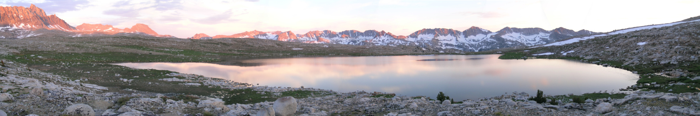
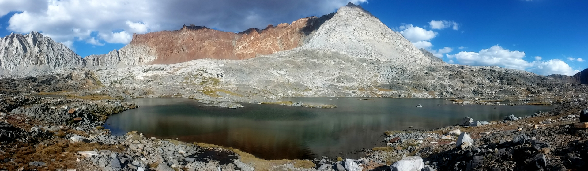
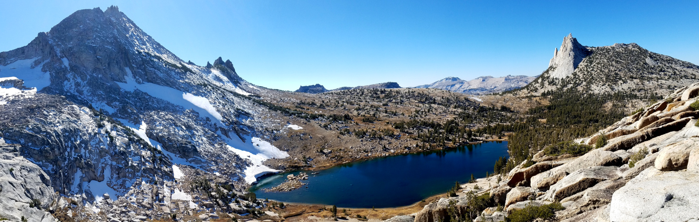

About Sierra Nets
I started Sierra Nets in 2011 to serve as reliable supplier of high-quality monofilament gill nets for fisheries managers and scientists in North America. The best nets are manufactured in Europe and can be difficult for American customers to access. To ensure that these high-quality nets are easily available, I purchase nets from the Lindeman factory in Finland, import them to the United States (and pay for shipping, customs duties, and import bonds), and sell them at cost to end users.
Why sell nets at cost instead of for a profit? Because, above all, I believe in the value of science in guiding the management of fisheries and aquatic ecosystems, and gill nets play a key role in that science. Selling nets at cost is my way of ensuring that our precious freshwater resources are managed in a sustainable way for generations to come.
Roland Knapp, Ph.D.

Our Nets
Specifications
Our "standard net" is a monofilament sinking net that is 36 m long and 1.8 m tall. Each net has six 6 m-long mesh panels, with mesh sizes ranging from 10 mm to 38 mm. A detailed specifications sheet is available here.
Lightweight
Floats and weights are as small and light as possible, and are encased in a nylon sleeve to minimize tangling. Nets weigh 1.5 kg (3.3 lbs) and pack into a space of approximately 25 cm × 15 cm × 15 cm.
Eco-Friendly
Weights in the weighted line are made of steel to avoid the environmental impacts associated with lead.
Cost
Nets are $215 each (plus shipping). This price covers my costs and does not generate a profit.
Uses
Our "standard net" is the net typically used for fish sampling and fish population eradication. They are designed specifically for use with trout populations in mountain lakes, but are highly effective with a broad range of fish species and environments.
Custom Nets
If you are interested in ordering custom nets (e.g., floating nets, or nets with different panel configurations), please contact me several months ahead of when you need the nets to discuss net configuration and pricing.

Purchase Nets
To purchase nets please send an email to info@sierranets.com indicating the number of standard nets you are interested in purchasing. I'll quickly send you a quote for the nets and shipping, usually within 24 hours. (It might take a bit longer during the summer, when I am often in the mountains conducting research.) Once you accept the quote, I'll email you an invoice that you can pay securely using a credit card. Alternatively, you can pay for the nets using a purchase order. Nets will be shipped to you using UPS Ground. This ordering process allows me to charge the actual shipping price, not an inflated pre-determined price.
I place an annual order with the Lindeman factory every October, and typically have 50–100 standard nets in stock. If you are interested in purchasing a larger number of nets, please contact me by October so I can include your nets in my annual order.
Thanks for your business!

Contact Info
Phone
Address – USPS
P.O. Box 22
Lee Vining, CA 93541-0022
Address – FedEx & UPS
95 Mono Lake Avenue
Lee Vining, CA 93541